TL;DR. Modularity is prized because it should make learning sample-efficient and compositional. But which modularity? We separate structural modularity (the trained weights are modular — low fan-in, block structure) from functional modularity (those modules match the task's true computation graph), and test four reference points on random sparse computation graphs: D (dense, no prior), L1 (generic \(\ell_1\) shrinkage), Lf (a fixed-code prior — strongly structurally modular but aligned to a random code), and Fc (an oracle confined to the true graph). The finding: structural modularity is cheap and largely inert; confinement to the correct structure is what pays. Fc beats the dense net 14.5× in area-under-the-learning-curve, stays flat as the ambient dimension grows, and — the capstone — generalizes compositionally to never-seen combinations of sub-functions, where the dense net collapses to the variance floor. Lf, despite being more modular than the oracle (fan-in \(1.2\) vs \(1.7\)), is efficiency-neutral against plain \(\ell_1\) and buys no compositional generalization: its modules track the random code, not the task. Structural modularity supplies only bounded-fan-in confinement (it matches the agnostic budget Fa under nuisance); the prize needs the right structure. thesis supported
1. The question
Modularity is prized for sample efficiency and compositional generalization: a modular learner should need far fewer examples, and should recombine known parts to handle inputs it never saw. This report asks which modularity delivers that — and shows the common intuition, “the network became modular, so the modularity is what helped,” mislocates it. The argument hinges on three properties that coincide on a hand-built example but are distinct:
- Functional sparsity — a property of the map \(f^\star\): it has only low-order input interactions (e.g. \(f^\star(x)=\sum_k g_k(x_{S_k})\), each \(S_k\) small). Measured by \(\mathrm{F}\).
- Structural modularity — a property of the trained network's realization: the weights, contracted onto units, route along a low-fan-in graph. Measured by \(\mathrm{S}\).
- Confinement — a property of the search: the architecture/prior restricts the sparse-graph hypothesis class throughout training, not just at the endpoint.
The thesis. Efficiency and compositional generalization are bought by confinement to the correct structure — not by functional sparsity of the returned map, and not by structural modularity per se. A dense, unconfined net can compute a perfectly sparse \(f^\star\) and still be sample-hungry; and a network can be more structurally modular than the oracle yet, if its modules are misaligned with the task, buy nothing over plain shrinkage. Four reference points disentangle these:
- D — dense, no prior. The floor: the search ranges over all maps throughout.
- L1 — plain \(\ell_1\) shrinkage. Generic sparsity, blind to the nodes: shrinks weights but carves no module structure.
- Lf — a fixed-code prior (the traditional neuron-representation construction): structurally modular — it drives fan-in below even the oracle — but its modules align with a random code, not the task graph. The pivotal case for “does structural modularity suffice?”
- Fc — an oracle confined to the true graph: functional modularity, the ceiling.
2. Theory
Let \(G=(V,E)\) be a computation graph: a DAG with \(N\) nodes over \(d\) inputs, max fan-in \(r\), each non-input node a map of its \(\le r\) parents. Let \(\mathcal{H}_G\) be the maps realizable by the fixed structure \(G\) and \(\mathcal{H}_{\mathrm{all}}\) all maps on \(d\) inputs. With the realizable sample bound \(n(\mathcal{H})=\Theta(\epsilon^{-1}\log|\mathcal{H}|)\) and alphabet size \(D\),
\[\begin{equation}\label{eq:counting} \log|\mathcal{H}_G|=\!\!\sum_{v\notin V_{\mathrm{in}}}\!\! D^{|\mathrm{pa}(v)|}\log D \;\le\; N D^{r}\log D, \qquad \log|\mathcal{H}_{\mathrm{all}}|=D^{d}\log D, \end{equation}\]so sample complexity is governed by the fan-in \(r\), not the ambient dimension \(d\): the confined/unconfined ratio is \(O\!\big(N D^{-(d-r)}\big)\), exponential in \(d-r\) (Prop. 1). And endpoint sparsity does not fix the curve: a learner over \(\mathcal{H}_{\mathrm{all}}\) that has seen \(n\) inputs still errs on a \(\Theta(1)\) fraction of the rest, so two learners can output the same \(f^\star\) on curves separated by the Eq. \eqref{eq:counting} gap (Prop. 2). The curve is fixed by what the search ranged over, not by the returned point.
Continuous targets. The same holds through approximation rates: with \(s\)-Hölder node functions, a sparse estimator matching \(G\) attains a risk exponent set by the fan-in, an unconfined \(s\)-smooth estimator of \(d\) variables one set by the ambient dimension:
\[\begin{equation}\label{eq:rate} \underbrace{\;n^{-\,2s/(2s+r)}\;}_{\text{confined (tracks } r\text{)}} \qquad\text{vs.}\qquad \underbrace{\;n^{-\,2s/(2s+d)}\;}_{\text{unconfined (tracks } d\text{)}} \quad\text{(up to log factors; Schmidt-Hieber 2020).} \end{equation}\]Finally, a learned pricing collapses: with a penalty \(\lambda\sum_{ij} c(\phi_i,\phi_j)\,|W_{ij}|\) over free codes \(\phi\), the codes drift together so \(c\to 0\) and the penalty vanishes with the weights untouched — confinement evaporates, the search reverts to \(\mathcal{H}_{\mathrm{all}}\), and it inherits the dense sample complexity. This is why the L condition below should match the baseline.
Numerical gate. src/theory_check.py validates
Eqs. \eqref{eq:counting}–\eqref{eq:rate} by direct version-space counting
(\(D{=}3,\,r{=}2\)): the confined learner reaches near-zero error at \(n^\star{=}32\)
independently of \(d\) (identical at \(d{=}8,11\)), and the gap is exactly
\(D^{\,d-r}\) — 729× at \(d{=}8\), 19 683×
at \(d{=}11\) (Fig 1).
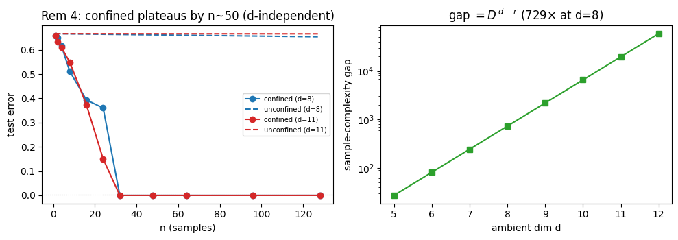
3. Task family
The decisive test needs the structural and functional axes swept independently over many
instances, which hand-built examples cannot give. So the harness generates an ensemble — a
random reduced DAG \(\mathcal{G}(d_{\mathrm{eff}},\nu,N,r,\Delta,\kappa,\varepsilon,s)\)
(src/cgraph.py):
- \(d_{\mathrm{eff}}\) signal inputs plus \(\nu\) nuisance inputs that are present but never read. Ambient \(d=d_{\mathrm{eff}}+\nu\) thus moves independently of structure — the lever that grows the search space without changing the function (experiments 2 and 4).
- \(N\) nodes in \(\Delta\) tiers, each reading \(\le r\) parents from earlier tiers (reuse \(\kappa\) biases toward used parents; entangler \(\varepsilon\) optionally adds a cross-tier edge); each node is a random \(s\)-Hölder function (small \(s\) = harder). The readout is the mean of terminals, so \(\Delta{=}1\) is additive \(f^\star=\mathrm{mean}_k\,g_k(x_{S_k})\) and \(\Delta{\gt}1\) a fan-in-\(r\) composition.
- each instance emits its ground truth — \(E(G)\), tiers, the nuisance partition, a wrong graph \(G'\), and the analytic \(f^\star\) — and is reduced (every signal input read) by construction.
The node functions, concretely. Each non-input node \(v\) with \(k=|\mathrm{pa}(v)|\le r\) parents is a random Fourier-feature map of its parents' (unit-variance) values \(z\in\mathbb{R}^k\):
\[\begin{equation}\label{eq:leaf} g_v(z)=\sqrt{\tfrac{2}{F}}\sum_{f=1}^{F} a_f\cos(\omega_f\!\cdot\! z + b_f),\qquad \omega_f\sim\mathcal{N}(0,\,s^{-2}I_k),\quad a_f\sim\mathcal{N}(0,1),\quad b_f\sim\mathrm{U}[0,2\pi), \end{equation}\]with \(F{=}16\) features drawn once per node from the instance's seeded RNG (so \(g_v\) is a deterministic function of the graph seed). Smoothness is set by the frequency scale: every component of \(\omega_f\) has standard deviation \(1/s\), so a larger \(s\) holds frequencies low and \(g_v\) smooth (easy), a smaller \(s\) admits high frequencies and a rougher map (hard) — the empirical stand-in for the rate's \(s\)-Hölder exponent in Eq. \eqref{eq:rate} (default \(s{=}2\); E5 sweeps \(s\in\{0.5,1,2\}\)). Each node's output is then centred and scaled to unit variance on a warm-up batch, so deep compositions stay numerically commensurable. (A frozen tanh-MLP leaf and a discrete \(D\)-ary lookup table are also provided, for replicate-across-primitives checks.)
The wiring \(E(G)\), concretely. \(E(G)\) is the graph's edge set: the ordered pairs \((v\!\to\!u)\) over the node set \(V=\{d\text{ input nodes}\}\cup\{N\text{ computation nodes}\}\cup\{\text{sink }O\}\), one per parent\(\to\)child link, meaning node \(u\) reads node \(v\). It is the ground-truth wiring that every oracle charges against and the recovery metric scores against. The wrong graph \(G'\) is a second edge set drawn with the same tier layout and fan-in\(\,\le r\) but computation wiring unrelated to \(E(G)\) (it drives the Fw condition); each terminal still feeds the sink, so \(G'\) realizes the same observable as \(G\) but routes it differently.
Named regimes are points in the family: additive (\(\Delta{=}1\)), hierarchical (tree, \(\Delta{\gt}1\)), reuse-heavy (large \(\kappa\)), weakly-entangled (\(\varepsilon{\gt}0\)), and dense-negative (\(r\approx d_{\mathrm{eff}}\) — the necessity control).
4. The ladder
Every condition trains the same MLP (depth \(\Delta{+}2\), width 128) so capacity never confounds; only the per-neuron prior differs. To price wiring on the weights, every MLP unit is given a graph-node label \(\mu\): an input unit takes its coordinate's node (a signal or a nuisance node), the \(m\) hidden units at each boundary are split into the \(N\) computation nodes by contiguous blocks (\(\mu_i=\mathrm{comp}[\lfloor iN/m \rfloor]\), \(\sim m/N\) units per node), and the lone output unit is the sink \(O\). A weight \(W^{(\ell)}_{ij}\) then carries a sender node \(\mu_j\) and a receiver node \(\mu_i\), and the oracle cost charges it for crossing a node pair that is not an edge of \(G\),
\[\begin{equation}\label{eq:oracle} \mathcal{R}(W)\;=\;\frac{1}{L}\sum_{\ell=1}^{L}\ \operatorname*{mean}_{i}\ \sum_{j} \, c(\mu_i,\mu_j)\,\bigl|W^{(\ell)}_{ij}\bigr|, \qquad c(\mu_i,\mu_j)=\begin{cases}0 & (\mu_j\!\to\!\mu_i)\in E(G)\cup\{\text{identity}\}\\ 1 & \text{else,}\end{cases} \end{equation}\]The cost \(c(\mu_i,\mu_j)\) is a fixed \(0/1\) table read off the ground-truth wiring once at initialization (no learnable state), with the identity \(\mu_i{=}\mu_j\) free so a node's value can pass through intermediate layers; a learned condition instead prices a distance between learned codes. The penalty is summed over senders, averaged over receivers, so each receiver pays its full off-graph incoming mass and per-weight pressure is invariant to \(\nu\) (needed for the flat-in-\(d\) signature of experiment 4). Each rung below adds \(c\,\mathcal{R}\) to the MSE (\(c\) annealed \(0\!\to\!c\) over the first \(10\%\) of steps; \(\phi\) are learned per-node codes, \(\operatorname*{mean}_i\) a receiver average and \(\sum_j\) a sender sum), spanning how — and how correctly — the search is confined:
| Cond. | method id | confines to | what it is / what it tests |
|---|---|---|---|
| D | baseline.noreg | \(\mathcal{H}_{\mathrm{all}}\) | \(\mathcal{R}=0\) — the unconfined baseline; also the implicit-bias probe (does plain GD confine for free? predicted: no). |
| L1 | nr.empty-flat-abs | — | plain \(\ell_1\), \(\mathcal{R}=\operatorname*{mean}|W|\): shrinks magnitudes but is blind to the nodes — separates confinement from generic sparsity. |
| L | nr.cgl-euc-abs | \(\mathcal{H}_{\mathrm{all}}\) (eff.) | distance-priced learned codes, \(\mathcal{R}=\operatorname*{mean}_i\sum_j\|\phi_{\mu_i}{-}\phi_{\mu_j}\|\,|W_{ij}|\), penalty-only ⇒ collapses (\(\phi\) coincide); must forfeit the gain (\(\approx\)D). |
| Fc | nr.cgfc-bin-abs | \(\mathcal{H}_{G}\) | oracle — Eq. \eqref{eq:oracle} with the true \(E(G)\) (cost 0 on edges, 1 else). The ceiling and positive control. |
| Fr | nr.cgfr-bin-abs | \(\mathcal{H}_{G}\) | Fc with codes through a fixed orthogonal frame; distances are preserved ⇒ \(\equiv\)Fc (frame-invariance check). |
| Fa | nr.cgfa-bin-abs | \(\mathcal{H}_{r,N}\) | structure-agnostic fan-in budget, \(\mathcal{R}=\operatorname*{mean}_i\sum_k\log(1{+}\|W_{i,k}\|_2/\eta)\) over sender-node groups \(k\): bounded fan-in from \((N,r)\), not \(E(G)\). |
| Fw | nr.cgfw-bin-abs | \(\mathcal{H}_{G'}\) | Eq. \eqref{eq:oracle} on a wrong graph \(E(G')\). Tests that mis-confinement hurts. |
| Lf | nr.cgfx-euc-abs | \(\mathcal{H}_{r,N}\) (random code) | fixed-code prior — the traditional neuron-representation construction: a distance penalty \(\mathcal{R}=\operatorname*{mean}_i\sum_j\|\phi_i-\phi_j\|\,|W_{ij}|\) over frozen random per-node codes (drawn once from the graph seed, so unlike L they cannot collapse). Strongly modular but aligned to the random code, not \(E(G)\) — the structural-vs-functional pivot (§6.6). |
Of these, D, L1, Lf, Fc are the four reference points — nothing / generic sparsity / structural-but-misaligned modularity / correct confinement; the rest interpolate the mechanism, isolating collapse (L), frame-invariance (Fr), bounded fan-in (Fa), and mis-confinement (Fw). Two further conditions enter where the narrative first needs them: a correctness knob Fm that rewires a fraction \(\tau\) of \(E(G)\) toward \(G'\) (\(\tau{=}0{\equiv}\)Fc, \(\tau{=}1{\equiv}\)Fw; §6.2, §6.5), and a second confinement mechanism WL that charges wiring length by tier-distance (§6.5).
5. Metrics
Three quantities carry the results — sample efficiency \(\mathrm{A}\), structural recovery \(\mathrm{S}\), and functional sparsity \(\mathrm{F}\). Their canonical definitions and formulae live in the cross-study metrics reference; here we give the working gloss each result needs, plus the one construction specific to this study: a contraction that sums \(|W|\) along the node labels into a node-to-node adjacency,
\[\begin{equation}\label{eq:adj} a(u\!\to\!v)\;=\;\sum_{\ell}\ \sum_{i:\,\mu_i=v}\ \sum_{j:\,\mu_j=u}\ \bigl|W^{(\ell)}_{ij}\bigr|, \end{equation}\]the realized weight mass routed from node \(u\) to node \(v\) (the identity \(u{=}v\) excluded; the same contraction returns for the off-graph metric B in §6.5). All three are computed on disjoint draws (no peeking) with fixed-rule thresholds:
- A — sample efficiency. The AULC: area under the test-MSE-vs-\(\log n\) learning curve (lower is better). The headline number.
- S — structural recovery (confinement proxy). Rank the DAG-valid candidate edges \(u\!\to\!v\) (those with \(\mathrm{tier}(u)\lt\mathrm{tier}(v)\)) by \(a(u\!\to\!v)\) and score the ranking against the true wiring \(E(G)\) by average precision — the mean precision-at-\(k\) at the ranks of the true edges (chance \(=|E(G)|/|\text{candidates}|\), reported alongside). Its companion effective fan-in is the mean number of sender node-groups whose group-norm exceeds \(\tfrac14\) of a receiver's maximum (a fixed rule): confined nets sit near \(r\), dense near \(N\).
- F — functional sparsity of the map. The total higher-order Sobol interaction mass \(\mathrm{F}=1-\sum_{i} S_i\) of the analytic \(f^\star\), where \(S_i\) is input \(i\)'s first-order Sobol index: \(\mathrm{F}\approx0\) for an additive/sparse map, \(\to1\) when interactions dominate. S is of the realization, F of the map — that dissociation powers experiment 2.
Setup
Every run trains one MLP (width 128, depth \(\Delta{+}2\), ReLU) with AdamW (learning rate \(2\times10^{-3}\), \(\beta=(0.9,0.999)\), default weight decay \(0.01\)), a cosine schedule, batch 64, up to \(6000\) steps, with early stopping (patience 25, evaluated every \(5\%\) of steps) and the best-validation checkpoint restored. The penalty coefficient is annealed \(0\!\to\!c\) over the first \(10\%\) of steps. Inputs are \(\mathcal{N}(0,1)\); training sizes run on a log grid (\(n\in\{32,\dots,4096\}\), or a \(\{64,\dots,2048\}\) core for the larger sweeps); the \(4096\) evaluation points are split into disjoint validation (selection / early-stop) and test halves, with a separate extrapolation draw at \(\sigma{=}1.5\).
Each seed draws a fresh graph and a fresh initialization, so distributions are over graph\(\times\)init jointly: 6 seeds for the ladder (E1/E8) and the compositional split (E9), 6 graphs per cell for the E2 ensemble, 5 seeds for E4/E5/E6. Each condition's coefficient \(c\) is chosen on the validation split and reported once on test (val-picks / test-once). Uncertainty is reported as 95% bootstrap percentile intervals — 2000 resamples over seeds for per-condition AULC, and a 3000-resample cluster bootstrap over graphs for the E2 coefficients; condition contrasts use a paired Wilcoxon test with Holm correction per cell, plus a better-powered pooled cell\(\times\)seed contrast (Cohen's \(d_z\)) where the prediction is cell-agnostic. The tiny MLPs run on CPU; the discrete theory gate and every metric are recomputed from the run shards.
Controls
No learned condition is interpreted until the gate
passes: Fc must beat D on a sparse task, the dense-negative must show no gain, L
must match D, \(\ell_1\) must fall short of Fc, and train fit must be comparable (so an AULC
gap is generalization, not underfitting). On a sparse additive cell all seven pass
(src/controls.py):
| Fc | Fw | Fa | L1 | L | D | dense-neg (Fc vs D) | |
|---|---|---|---|---|---|---|---|
| test MSE | 0.0048 | 0.0105 | 0.0237 | 0.0277 | 0.156 | 0.163 | 0.052 vs 0.050 |
| recovery AP | 1.00 | 0.72 | 0.34 | 0.59 | 0.21 | 0.22 | — |
Fc beats D 34× and recovers the wiring perfectly; L\(\approx\)D (collapse forfeits the gain); L1\(\gg\)Fc (shrinkage sparsifies but does not route); the dense-negative shows no gain (sparsity is necessary). Sweeping the ambient dimension, Fc is flat while D degrades 16× — the scaling signature in miniature. These same controls cover the necessity and frame checks (\(\lambda{=}0\) reproduces D; Fr\(\equiv\)Fc), so the results need no separate experiment for them. Only with the gate green do we read the campaign.
6. Results
The experiments build from the ladder to the capstone: E1 ranks the four reference points and E8 stress-tests its one surprise — a wrong sparse graph beats the baseline — across composition depth; E2 dissociates structural from functional sparsity and E4–E5 test the predicted ambient-dimension scaling; E6–E7 make confinement causal and find it mechanism-plural; and the last two ask whether structural modularity alone reproduces the gain (§6.6) and generalizes compositionally to never-seen combinations (§6.7).
6.1 E1 — the confinement ladder
Ranking the learning curves places the oracle ceiling, shows the collapse forfeits the gain, and checks the structure-agnostic budget against shrinkage. Across all four decomposable cells the AULC orders \(\mathrm{Fc}\approx\mathrm{Fr} \lt \mathrm{Fw} \lt \mathrm{Fa} \lt \mathrm{L1}\approx\mathrm{Lf} \lt \mathrm{L}\approx\mathrm{D}\) (Fig 2). Fc is the ceiling, beating D in \(24/24\) pooled pairs (Cohen's \(d_z{=}-3.0\), \(p\approx1.2\times10^{-7}\); \(14.5\times\) on the additive cell). L\(\approx\)D (collapse within \(1\%\) of no regularizer); Fr\(\approx\)Fc (frame invariance); L1\(\lt\)Fc (\(d_z{=}-2.35\), shrinkage never reaches the ceiling). The structural-vs-functional split is already visible: Lf\(\approx\)L1 (AULC \(0.242\) vs \(0.239\)) — the fixed-code prior is the most structurally modular condition (effective fan-in \(1.2\), below even the oracle's \(1.7\)) yet ties plain shrinkage, buying nothing for its modularity (dissected in §6.6). The one departure from the literal prediction is Fw\(\lt\)D (not \(\le\)): a wrong sparse graph still ignores nuisance and bounds fan-in, confining to a wrong corner of \(\mathcal{H}_{r,N}\) — confirming that “bounded fan-in, not knowing the exact graph” is the operative restriction, which the next experiment pursues across composition depth (§6.2).
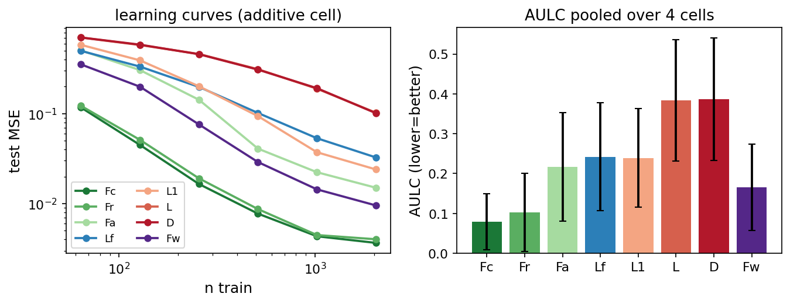
6.2 E8 — depth × wrongness (exploratory)
E1 leaves one prediction unmet: a wrong sparse graph (Fw) beat the unconfined baseline on every cell, including the \(\Delta{=}2\) composition cells — yet the design expected the specific wiring to become load-bearing once \(\Delta{\gt}1\), so Fw should have approached D. Was Fw's success a shallow-task artifact? Holding everything fixed (\(d_{\mathrm{eff}}{=}6\), \(\nu{=}8\), \(N{=}12\), \(r{=}2\)) and sweeping only the composition depth \(\Delta\in\{1,\dots,5\}\) — \(N\) fixed, so depth (not node count) grows — we run the correctness dose Fm(\(\tau\)) at each depth (\(\tau{=}0\equiv\)Fc, the true graph; \(\tau{=}1\equiv\)Fw, the wrong graph) against D, and add the fixed-code prior Lf to ask whether structural modularity holds up with depth. The decisive readout is the within-depth contrast, differencing out any change in intrinsic difficulty.
The prediction fails — informatively. A wrong sparse graph beats the unconfined baseline at every depth (Fw\(\,\lt\,\)D throughout: by \(0.15\) at \(\Delta{=}1\), still below at \(\Delta{=}5\); Fig 3), so Fw's success was no artifact. And the oracle's premium for getting the wiring exactly right shrinks as composition deepens rather than growing: the Fw/Fc AULC ratio falls monotonically \(1.69\!\to\!1.04\) (\(\rho(\Delta,\mathrm{Fw}/\mathrm{Fc})=-1.0\)), and the within-depth correctness dose flattens (\(\rho(\mathrm{A},\tau)\!:\;0.18\!\to\!0.03\)). At \(\Delta\ge4\) the deep task is sample-hungry enough that even the oracle barely helps (Fc\(\,0.64\) vs D\(\,0.75\) at \(\Delta{=}4\)) and D, Fc, Fw become statistically indistinguishable. So the load-bearing ingredient is bounded-fan-in confinement — which Fw shares, since \(G'\) is also sparse — not the exact wiring; correctness is a diminishing premium. This sharpens Lemma 2: confining to the right graph buys less and less over confining to a sparse one as the function deepens.
The fixed-code prior places structural modularity in the same frame. Lf beats D at every depth too (by \(0.08\) at \(\Delta{=}1\), shrinking to \(0.02\) at \(\Delta{=}5\)) — so its bounded-fan-in modularity is a genuine, if weak, confiner — but it is the weakest of the confining arms, sitting above even the coherently-wrong Fw at every depth. A random-code modularity (low fan-in, incoherent routing) is worth less than a coherent wrong sparse graph, and both far less than the oracle: structural modularity confines, but feebly.
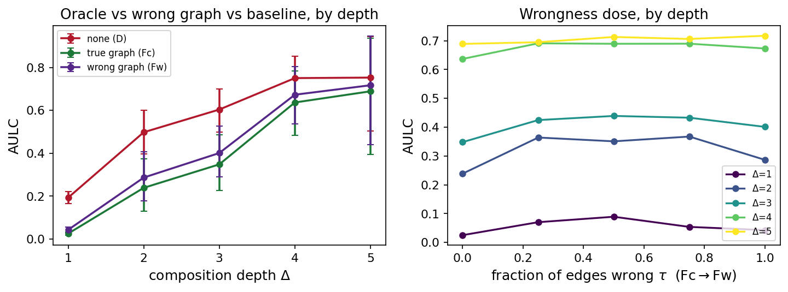
6.3 E2 — structural vs. functional
To separate the thesis from its rival, regress efficiency on the two competing explanations,
\[\begin{equation}\label{eq:e2} \mathrm{A}\;\sim\;\beta_S\,\mathrm{S}\;+\;\beta_F\,\mathrm{F}\;+\;(\text{graph, seed random effects}), \end{equation}\]with the structural axis S moved by the condition and the functional axis F by \((r,\varepsilon)\). The pivotal cell is the off-diagonal one: a dense net (D) computing a maximally sparse additive \(f^\star\) — high functional sparsity, low confinement; if efficiency tracked F it would be cheap. The pre-registered falsifier is a significant negative \(\beta_F\) (sparse-but-unconfined maps generalizing for free, i.e. plain GD confines on its own).
Over the full ensemble (120 rows, 24 graphs) the fit gives \(\beta_S=-0.079\) and \(\beta_F=+0.133\), but the apparent \(\beta_S\lt0\) is an artifact of the oracle ceiling, not evidence that recovery tracks efficiency: Fc saturates the recovery metric at \(\mathrm{S}{=}1.0\) on every graph, and dropping those 30 degenerate rows the interior slope is \(\beta_S=+0.005\) (CI \([-0.035,0.035]\), straddling zero; Fig 4). The reason: Fa is as efficient as the oracle is structured without recovering the graph (recovery AP \(0.44\approx\)D's \(0.43\), yet AULC \(0.28\) beats D's \(0.38\)). Graph-recovery AP measures confinement to the correct graph; Fa confines to bounded fan-in (\(\mathcal{H}_{r,N}\)) instead, invisible to the metric — the same mechanism-plurality lesson as E7 (§6.5). So the regression does not cleanly isolate S. What it does show robustly, in both fits, is \(\beta_F\gt0\) (CI \([0.094,0.165]\) full, \([0.062,0.156]\) trimmed): the pre-registered falsifier — a negative \(\beta_F\) — never fires, so endpoint functional sparsity is not a hidden efficiency channel.
The confinement claim therefore rests not on the regression slope but on the off-diagonal cell and the causal dose: on the maximally sparse additive task the unconfined D is 14.5× less efficient than Fc despite both computing the same map, and raising the oracle coefficient drives AULC down as recovery rises (\(\rho(\mathrm{A},\mathrm{S})=-0.91\), §6.5). Efficiency follows confinement, not the map's endpoint sparsity.
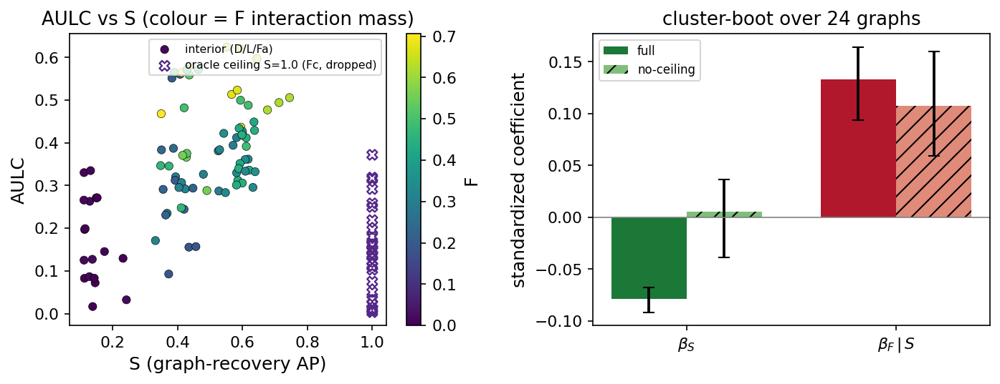
6.4 E4–E5 — scaling in the ambient dimension
The counting argument predicts a gain exponential in \(d-r\). Holding structure fixed and growing the ambient dimension via \(\nu\), the confined curve should be flat while the unconfined degrades — the direct image of Eq. \eqref{eq:counting}. Sweeping \(\nu\in\{0,8,16,32,64\}\), the confined Fc AULC is flat (slope \(2\times10^{-4}\)) while D and L degrade linearly (\(6.3\times10^{-3}\), \(26\times\) steeper); the Fc/D gap widens to \(14\times\) at \(\nu{=}64\) (Fig 5). The agnostic budget Fa is intermediate (a hard cost zeroes nuisance weights; the soft penalty only mostly).
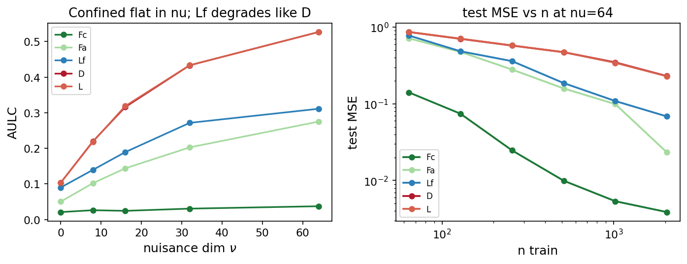
The continuous rate (E5). For real-valued targets Eq. \eqref{eq:rate}'s analogue is a rate: the confined error's decay exponent is set by the fan-in \(r\) and is independent of \(d\), the unconfined one set by \(d\). Sweeping \(s,r,d\) on additive cells and fitting the log–log slope of test MSE vs \(n\) (Fig 6), the confined rate does not degrade as the ambient dimension grows (slope in \(\nu\) \(+7.0\times10^{-3}\)) while the unconfined falls (\(-9.1\times10^{-3}\)); the raw curves at \(d{=}6\) and \(d{=}70\) overlap onto the floor for the confined case while the unconfined \(d{=}70\) is still stuck at \(n{=}8192\). We read the \(d\)-invariance, not absolute exponents — easy low-\(r\) cells plateau at the floor — agreeing with the counting (§2) and the AULC scaling above.
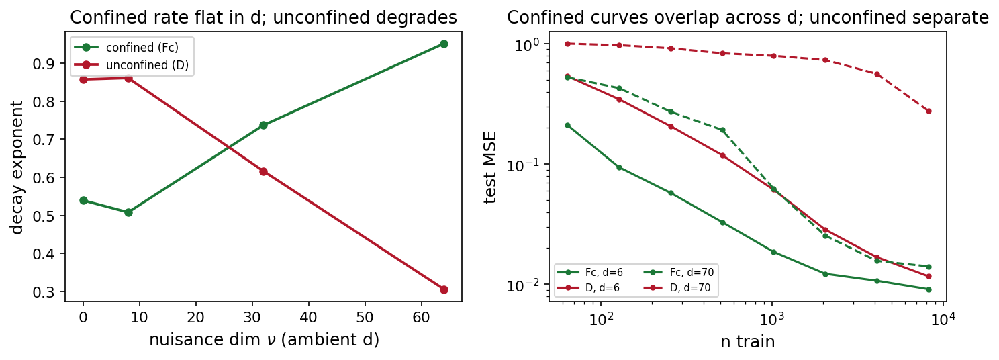
6.5 E6–E7 — how confinement works
Causal — a dose-response (E6). Perturbing confinement with the task fixed, three ways. (a) Strength: raising the oracle coefficient from 0 (= D), AULC falls monotonically as realized S rises (Spearman \(\rho=-0.91\)) — a causal \(\mathrm{A}\)-vs-S curve (Fig 7). (b) Correctness: rewiring a fraction \(\tau\) of edges toward the wrong graph raises AULC (\(\rho=+0.30\)), with \(\tau{=}0\) (true graph) best. The middle is deliberately non-monotone: a fully but coherently wrong sparse graph (\(\tau{=}1\)=Fw) still bounds fan-in, so it beats an incoherent partial rewiring — the same Lemma 2 effect as E1's Fw\(\lt\)D. (c) Timing: confinement throughout is best (AULC \(0.021\)); releasing it early (\(0.029\)) or delaying it (\(0.034\)) both forfeit part of the gain, yet stay far below the unconfined baseline (\(0.284\)) — it must act while data is scarce, though even part-time confinement leaves a large imprint.
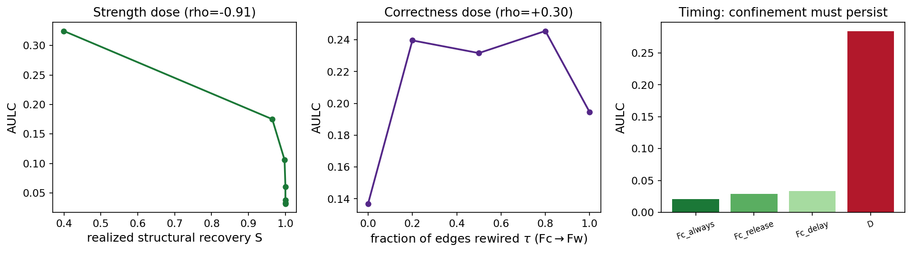
Mechanism-plural (E7). Is the graph cost special, or does any mechanism that lowers communication buy the same efficiency? We realize confinement three ways — the graph oracle Fc (off \(E(G)\)), the structure-agnostic fan-in budget Fa, and a second, spatial mechanism WL that charges each edge by the depth-tier distance it spans (\(\mathcal{R}=\operatorname*{mean}_i\sum_j|\mathrm{tier}_i{-}\mathrm{tier}_j|\,|W_{ij}|\); node depth only, never \(E(G)\)) — each swept over its coefficient. We plot AULC against the realized off-graph communication B, the fraction of the contracted mass (Eq. \eqref{eq:adj}) on candidate edges not in \(E(G)\),
\[\begin{equation}\label{eq:bcomm} \mathrm{B}=\frac{\sum_{e\notin E(G)}a_e}{\sum_{e\in\text{candidates}}a_e}\qquad(\text{low B = routes along the true wiring}). \end{equation}\]The prediction was a single curve \(\mathrm{AULC}(B)\). Instead (Fig 8): every mechanism confines — each monotone in its strength, all below the baseline — but they do not share one \(\mathrm{AULC}(B)\) curve. The oracle and fan-in budget improve as off-graph mass falls (\(\rho=+1.0\)); wiring-length improves as it rises (\(\rho=-1.0\)), shortening edges toward local wiring that is cheap but off-graph. The mechanisms head different ways in the \((B,\mathrm{AULC})\) plane, so no single “communication-left” scalar captures all of them — the pre-registered “separation is informative” outcome: confinement is real and mechanism-plural.
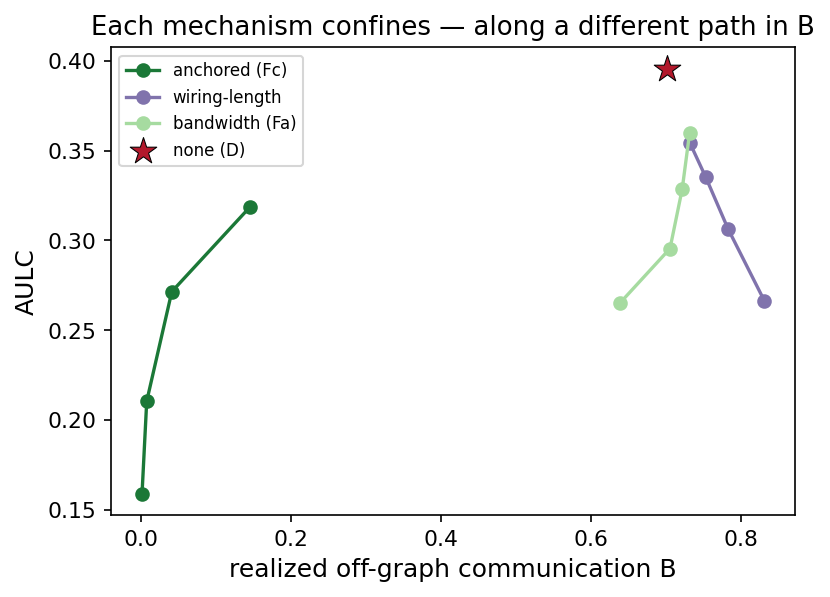
6.6 Structural vs. functional modularity (exploratory)
The four reference points isolate the gap between the structural and functional senses of modularity. Lf is the traditional fixed-code prior — a plain MLP with a distance penalty over fixed random per-node codes, \(\mathcal{R}=\operatorname*{mean}_i\sum_j\|\phi_i-\phi_j\|\,|W_{ij}|\), the codes drawn once from the graph seed and frozen (so, unlike L, they cannot collapse). Prior neuron-representation work reports that such a fixed code reliably induces structural modularity.
It does — emphatically (Fig 9). Lf drives the effective fan-in from the dense baseline's \(\approx9\) down to \(\approx1.2\), below even the oracle's \(\approx1.7\): the distance penalty over frozen codes carves a low-fan-in, block-modular network, exactly the prior-work result. But the modules are task-misaligned: Lf's graph-recovery AP is \(0.25\), at or below the chance level \(0.33\) — they track the random code geometry, not \(E(G)\), and only the oracle recovers the true wiring. So the structural modularity is real but points the wrong way.
And it buys almost nothing. Lf\(\approx\)L1: plain \(\ell_1\) shrinkage — essentially unmodular (fan-in \(8.0\)) — matches Lf's efficiency exactly (AULC \(0.239\) vs \(0.242\), ratio \(1.01\)), far above the oracle's \(0.079\), so Lf's dramatic modularity adds nothing over generic weight sparsity. A fixed code reliably yields structural modularity (reproducing the neurep literature), but that modularity is only as useful as the code geometry is task-relevant — a random code produces modules misaligned with the task, and its efficiency collapses to plain shrinkage. Efficiency tracks confinement to the right structure, not modularity per se — the E2/E7 lesson. What structural modularity does reliably buy is the weak, bounded-fan-in confinement of E4 and E8 — it matches the agnostic budget Fa in nuisance-robustness and beats the dense baseline at every depth; what it does not buy is the prize, which the capstone now makes vivid.
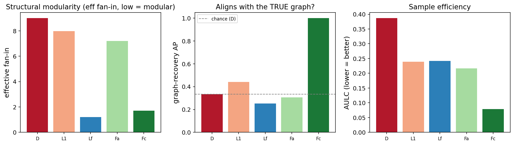
6.7 Compositional generalization — the capstone (exploratory)
Everything so far is measured in-distribution: test inputs are drawn from the same law as training. But the deepest promise of modularity is compositional — a learner with the right modules should recombine them to handle inputs it never saw. This is also the sharpest test of the structural-vs-functional question: if structural modularity sufficed, the modular-but- misaligned Lf should generalize compositionally; if only the right structure works, only Fc should.
The systematicity split. Partition the \(d_{\mathrm{eff}}\) signal coordinates into \(K\) binary-mode factors; each input draws every factor from one of two modes (\(\mathcal{N}(\pm\mu,\sigma^2)\)). Training and the in-distribution eval draw their combinations from a train subset of the \(2^K\) mode-patterns; the OOD eval draws from the held-out patterns. Per-factor marginals are matched across the two (each factor is \(\pm\) equally often), so the ID\(\to\)OOD shift is a pure novel co-activation — the canonical “see A&B and B&C, then test A&C.” We run D, L1, Lf, Fc over \(K\in\{3,5\}\) on the additive and hierarchical cells, six seeds, and report the OOD gap (AULC on held-out minus held-in combinations).
The result is decisive (Fig 10). The oracle composes; nothing else does. Fc closes the compositional gap on every cell and \(K\) (gap \(\approx0.02\)–\(0.10\), \(3.6\)–\(61\times\) smaller than the dense net's); the pooled paired contrast is \(d_z{=}1.26\), \(p{=}1.2\times10^{-4}\). The dense net memorizes the seen combinations and predicts the mean on novel ones (on the additive cell its held-out MSE reaches the variance floor). And the pivotal case lands flat against the hypothesis: Lf generalizes no better than plain \(\ell_1\) — its OOD gap tracks L1's and D's, far from Fc's, on every cell. Structural modularity, however dramatic (Lf is the most modular condition of all), buys no compositional generalization, because its modules align with a random code rather than the true factor axes. So the hypothesis that structural modularity confers compositional generalization is refuted; what stands is the sharper claim — it is functional modularity, confinement to the correct structure, that composes.
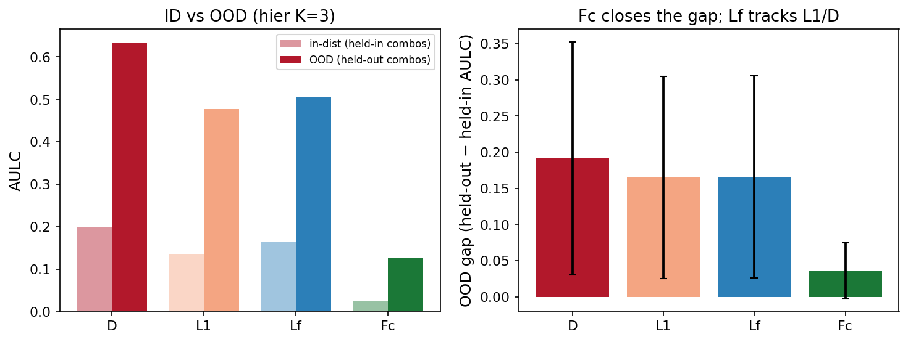
A second OOD axis, for free. Every run is also evaluated at a larger input norm (\(\sigma{:}\,1.0\to1.5\)), a covariate shift present in all \(7{,}960\) runs. Here Fc reaches the lowest absolute off-distribution error (\(0.23\) vs the dense net's \(0.69\), \(\approx3\times\)), and Lf again sits between L1 and D (Fig 11). The ordering is concordant with the compositional axis — but confinement does not protect the degradation ratio (Fc's near-zero in-distribution error inflates its ratio): magnitude shift is not the failure mode confinement targets. Compositional shift is, and that is where the gap between structural and functional modularity is starkest.
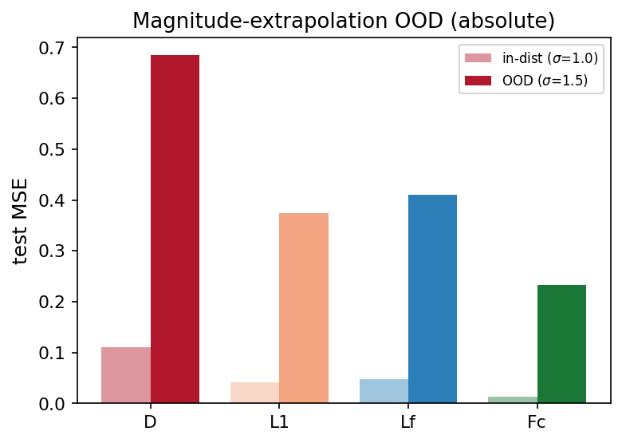
What stands. Functional modularity — confinement to the correct structure — composes; structural modularity does not. The open problem this study isolates and quantifies: a learned cost that self-discovers the right structure, not merely a sparser or a randomly-modular one. Sibling reports show a free learned code does not make weights modular and dissect why the Separator price collapses; this study supplies the missing “so what” — that collapse forfeits the entire sample-efficiency gain an oracle recovers in full.
Reproduce. theory_check.py (gate) → pytest tests/
(33 tests) → controls.py → materialize_*.py --submit (E1, E2, E4, E5,
E6, E7, and the post-hoc depth (with Lf), fixed-code, and compositional-OOD sweeps) →
runstore harvest → analyze.py → report/fig/gen_figs.py.
Every number traces to a script that reads results/; seeds and git SHAs are in
results/provenance.json and results/summary.json. The realization of
every abstract object (how each ladder condition becomes a concrete penalty) is frozen in
plan/DESIGN.md.